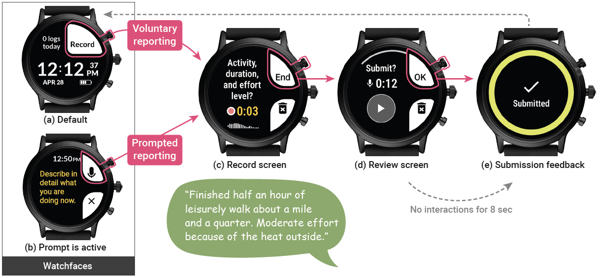
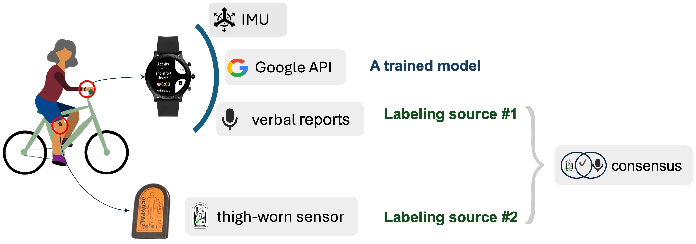
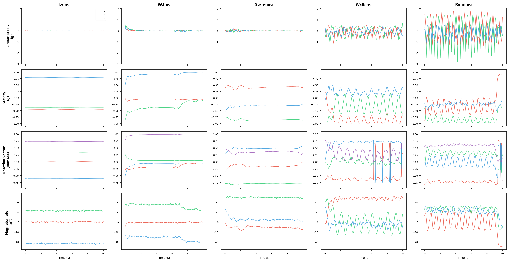
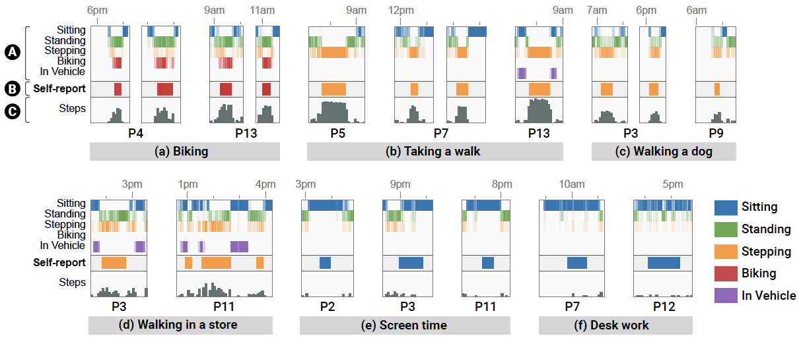
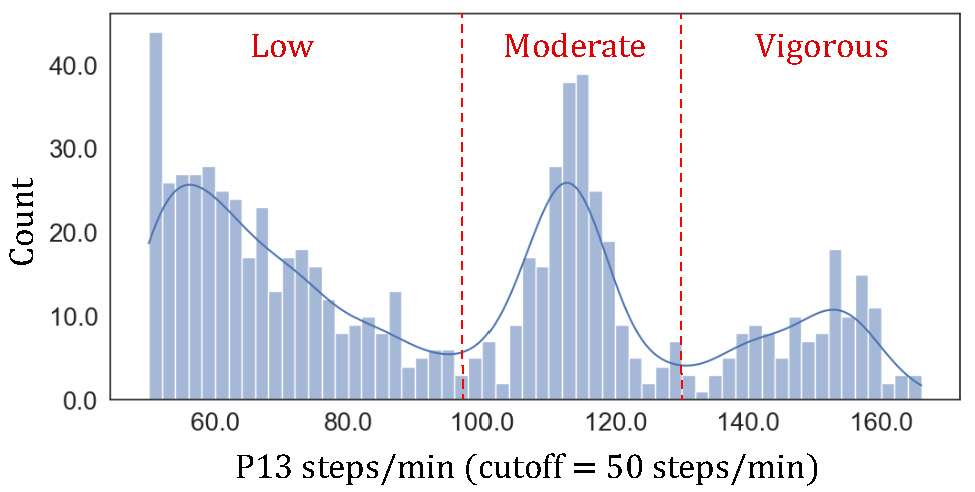

The dataset is currently being prepared and will be released publicly soon.
The MyMove dataset was collected to support the development of personalized activity tracking technologies for older adults. It contains smartwatch inertial sensor readings, a thigh-worn activity monitor, and self-reported verbal activity labels — collected from 13 older adults in their natural, everyday environments over one week.
The dataset supports research on recognizing everyday activities from wearable sensors, enabling older adults to teach their activity trackers, and understanding how real-world activity data from older adults can be collected and validated.
Participants
13
Study Duration
7 days
Total IMU Data
941 h
If you use this dataset in your research, please cite the following papers:
@inproceedings{kim2022mymove,
title = {MyMove: Facilitating Older Adults to Collect In-Situ Activity Labels on a Smartwatch with Speech},
author = {Kim, Young-Ho and Chou, Diana and Lee, Bongshin and Danilovich, Margaret and Lazar, Amanda and Conroy, David E. and Kacorri, Hernisa and Choe, Eun Kyoung},
booktitle = {Proceedings of the 2022 CHI Conference on Human Factors in Computing Systems},
year = {2022},
doi = {10.1145/3491102.3517457}
}
@article{khayami2025groundtruth,
title = {From Verbal Reports to Personalized Activity Trackers: Understanding the Challenges of Ground Truth Data Collection with Older Adults in the Wild},
author = {Khayami, Hossein and Wang, Lining and Kim, Young-Ho and Lee, Bongshin and Conroy, David E. and Lazar, Amanda and Choe, Eun Kyoung and Kacorri, Hernisa},
journal = {Proceedings of the ACM on Interactive, Mobile, Wearable and Ubiquitous Technologies},
volume = {9},
number = {2},
articleno = {38},
year = {2025},
doi = {10.1145/3731749}
}
The study was an in-the-wild deployment conducted in May–July 2021. Participants collected their own activity data in their natural home and community environments in the Northeast region of the United States. Due to COVID-19, all onboarding and debriefing sessions were held remotely via Zoom. Study equipment was delivered and picked up by a researcher.
| Phase | Duration | Description |
|---|---|---|
| Introductory Session | ~45 min (Zoom) | Equipment setup, study overview, device configuration |
| Adaptation Period | 4 days | Participants acclimate to wearing and charging devices; activity reporting feature disabled |
| Tutorial Session | ~1 hr (Zoom) | Training on MyMove activity reporting; practice runs |
| Data Collection | 7 days | Continuous smartwatch and thigh sensor wear; verbal activity reporting during waking hours |
| Debriefing Interview | 40–70 min (Zoom) | Semi-structured interview on usability, experiences, and preferences |
Participants reported activities using MyMove, a custom Android Wear app. They could initiate a report voluntarily or respond to an ESM prompt, describe their activity, duration, and effort level via speech, review the recording, and submit — all from the wrist.

Verbal reports and thigh-worn sensor data were triangulated to produce consensus activity labels. The figure below illustrates how data from both sources flows through the labeling pipeline.

Total Participants
13
Age Range
61–90
Mean Age
71.08
| Gender | 10 women, 3 men |
| Education | All had Bachelor's or graduate degrees |
| Native language | All native English speakers |
| Employment | 8 retired, 3 self-employed, 2 full-time employees |
| Handedness | All right-handed |
| Participant | Age (Sex) | Employment | Latest Occupation | Education | Tech Proficiency | Steps/day | MVPA/day | Sedentary/day |
|---|---|---|---|---|---|---|---|---|
| P1 | 61 (M) | Retired | Senior manager | Bachelor's | Very confident | 10,941 | <1m | 11h 23m |
| P2 | 67 (F) | Self-employed | Visual artist | Bachelor's | Enjoy the challenge | 6,192 | 21m | 6h 21m |
| P3 | 77 (F) | Retired | Qualitative researcher | Ph.D./M.D. | Very confident | 9,655 | 2m | 10h 53m |
| P4 | 70 (M) | Self-employed | Landlord | Bachelor's | Enjoy the challenge | 7,793 | 32m | 9h 7m |
| P5 | 81 (F) | Retired | Disability consultant | Master's | A little apprehensive | 8,773 | 23m | 7h 48m |
| P6 | 79 (F) | Retired | Policy analyst | Master's | Very confident | 7,320 | 16m | 9h 12m |
| P7 | 69 (F) | Full-time | Business manager | Master's | Enjoy the challenge | 6,499 | 21m | 12h 5m |
| P8 | 90 (F) | Self-employed | Piano tutor | Master-level | Enjoy the challenge | 6,281 | <1m | 12h 24m |
| P9 | 62 (F) | Full-time | Communications director | Master-level | Very confident | 5,313 | 5m | 13h 50m |
| P10 | 62 (F) | Retired | Human resource specialist | Bachelor's | Very confident | 3,430 | <1m | 13h 37m |
| P11 | 67 (F) | Retired | Technical training manager | Master-level | Enjoy the challenge | 7,296 | 2m | 7h 19m |
| P12 | 75 (F) | Retired | Rehabilitation counselor | Master's | Very apprehensive | 4,148 | 9m | 13h 58m |
| P13 | 64 (M) | Retired | Regulatory specialist | Master's | Enjoy the challenge | 10,566 | 46m | 11h 30m |
MVPA = moderate-to-vigorous physical activity (≥100 steps/min); Sedentary = time spent sitting and lying while awake. Measured by activPAL during the 7-day data collection period.
Each record corresponds to one 60-second window. IMU signals are recorded as a 10-second burst at 50 Hz every minute.
| Sensor | Signal | Rate | Notes |
|---|---|---|---|
| Linear Acceleration | (m/s², x, y, z) — gravity removed | 50 Hz (~500 samples/min) | 10-sec window recorded every minute |
| Gravity | (m/s², x, y, z), norm ≈ 9.81 | 50 Hz (~500 samples/min) | 10-sec window recorded every minute |
| Rotation Vector | Device orientation quaternion (x, y, z, w) | 50 Hz (~500 samples/min) | 10-sec window recorded every minute |
| Magnetometer | Magnetic field (µT, x, y, z) | 50 Hz (~500 samples/min) | Present in most but not all minute-records |
| Heart Rate | BPM | Variable | Present intermittently, not in every minute-record |
| Step Count | Steps per minute | 1-minute bins | Built-in smartwatch pedometer |
| Google Activity Recognition | Activity label + confidence (0–100) | 1-minute bins | Still, Walking, Running, On_Foot, On_Bicycle, In_Vehicle, Tilting, Unknown; excluded when watch not worn |
Note: Total (raw) acceleration, as commonly used in HAR datasets, equals Linear Acceleration + Gravity and can be reconstructed by summing the two signals above.
Data format: Protocol Buffers, stored on-watch and uploaded to a MySQL database via the companion phone's Wi-Fi.
| Spec | Detail |
|---|---|
| Model | activPAL4 (PAL Technologies Ltd.) |
| Sensors | 3-axis accelerometer |
| Placement | Midline of the thigh between knee and hip |
| Worn | 24/7 (continuous, including sleep) |
| Battery life | >3 weeks |
| Outputs | Activity class, duration, step count per minute (SPM), MET values |
| Activity classes | Stepping, Sitting, Sitting in transport, Lying, Standing, In Vehicle, Biking |
| Parameter | Detail |
|---|---|
| Format | Free-form speech recordings |
| Max duration | 2 minutes per recording |
| Average length | 18.65 sec (SD = 13.65) |
| Average word count | 32.05 words (SD = 26.15) |
| Transcription | Manual; Microsoft Cognitive Speech WER: 4.93%, Google Cloud Speech WER: 8.50% |
Note: Audio files are not included in the public release due to privacy concerns.
One 10-second window of all four IMU signals — linear acceleration, gravity, rotation vector, and magnetometer — recorded from the smartwatch during five representative activities: lying, sitting, standing, walking, and running.

Raw IMU sensor readings across five activities (lying, sitting, standing, walking, running).
Examples of verbally reported activity segments aligned with activPAL posture classifications and smartwatch step counts over time.

Stepping cadence distribution for one participant (P13), showing distinct peaks corresponding to low, moderate, and vigorous stepping intensities. Thresholds vary across individuals and require personalization.
